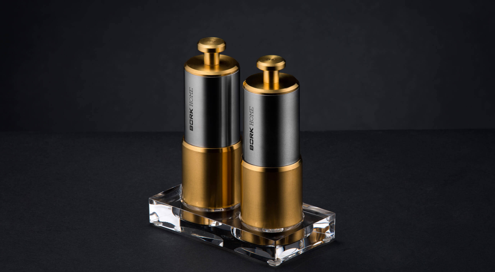
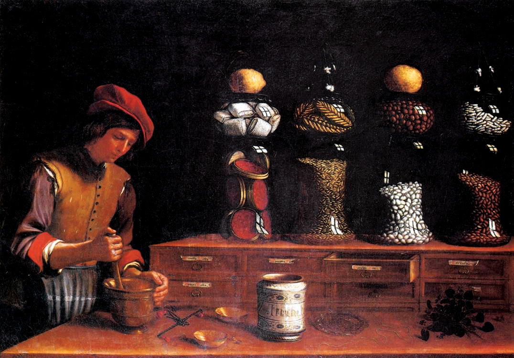
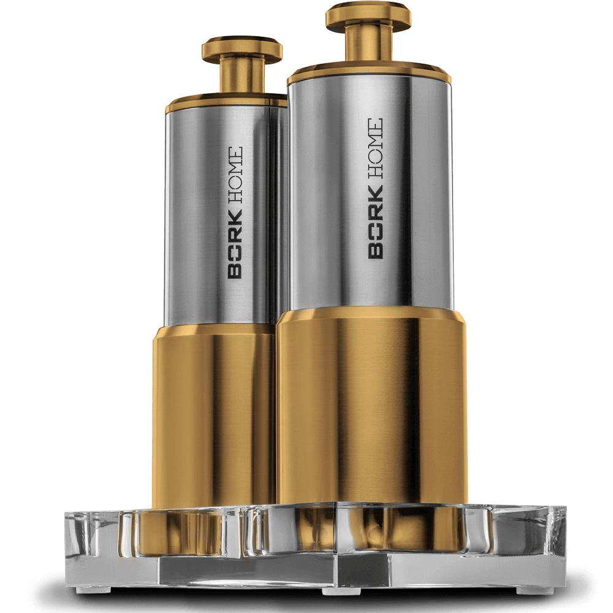

Набор для специй BORK HM503 Gold
Предметы эксклюзивной коллекции BORK GOLD созданы, чтобы подчеркнуть роскошную атмосферу интерьера.
Все продукты серии сопровождаются сертификатом с уникальным номером продукта.
Данный сертификат гарантирует качество золотого покрытия.
- 24 каратное золото
- 99,9% доля чистого золота
- 999-я проба
- 1,5 мкм толщина покрытия
- Нанесение гальваническим методом
Только истинные гурманы способны понять разницу между уже измельченными специями, сложенными в упаковку, и свежемолотым вариантом, который обладает насыщенным вкусом и душистым ароматом. Если Вы хотите наслаждается изысканным вкусом блюд каждый раз, а не лишь тогда, когда упаковка со специями только что вскрыта, Мельница для специй позволяет в считанные секунды перевести перец горошком в разряд молотого, а также помолоть кристаллы соли или семена гвоздики.
История мельницы для специй
В древности пряности не мололи, а толкли в ступке при помощи пестика.
В 1842 году братья Пежо создают первый механизм для ручной мельницы.
Размалывающий механизм мельницы имел канавки двух размеров: более крупные канавки просто давят горошины перца, а более мелкие – доводят помол до нужного размера. Этот принцип до сих пор используется в мельницах для специй.
Ручная мельница для перца – это выбор настоящих гурманов. Принцип работы такого прибора предельно прост. В емкость закладываются различные виды перца, затем с помощью поворотного механизма приводится в движение жернова и происходит измельчение специй.
Набор для специй BORK HM 503 GOLD имеет корпус из нержавеющей стали с золотым напылением высотой 14 см. отличающийся эргономичностью, а также элегантным и современным дизайном.
Удобный и надежный поворотный механизм позволяет равномерно молоть специи.
Акриловая подставка на ножках предотвращает скольжение аксессуара по поверхности.